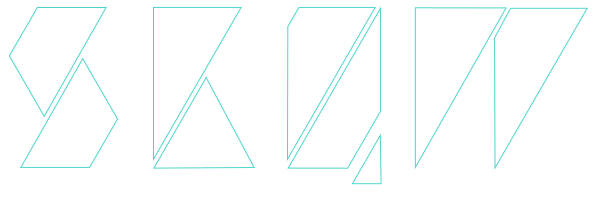

A native desktop audio visualizer, built with Electron and Angular 2.
SKQW (pronounced "skew") allows you to visualize the audio output of you computer's sound card. It is inspired by my love of the old Winamp plugins like Milkdrop and Geiss. Visualizations are written in JavaScript and use HTML Canvas (2d or 3d) to render.